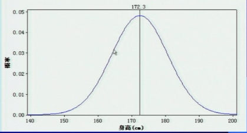

第二节 心理正常与异常及其区分本节重点内容一、正常心理的三大功能* 二、正常心理与异常心理的区分标准* 1.标准化的区分 2.心理学的区分原则* 主观世界与客观世界的统一性原则 心理活动的内在协调性原则 人格的相对稳定性原则 第一单元 正常心理活动的功能一、正常心理的三大功能1.适应环境，健康地生存和发展。 2.人际交往，社会功能正常运行。 3.正确地反映、认识客观世界。 异常心理：即正常心理功能的丧失。 |
|
二、心理正常与心理异常的区分* （一）标准化的区分 1.医学标准 将心理障碍看作是躯体疾病，纳入医学的范畴； 必须找到疾病的病理解剖和病理生理变化的依据； 将心理和行为异常的表现视为疾病的症状，其原因则归结为脑功能失调。 2.统计学标准 （1）心理特征在统计学上服从正态分布，正常与异常心理可以根据偏离平均值的程度来决定； 
（2）心理异常是相对于平均数而言的，所以没有绝对的正常和异常，取决于平均数的变动； |
|
（三）内省经验标准 包括病人的内省和观察者的内省两个方面； 具有很大的主观性，观察者的经验不同，评定行为的标准也不同。 （四）社会适应标准 正常人的行为符合社会准则，能根据社会要求和道德规范行事——社会适应性行为。 WHO（1948)关于健康的定义 1948年世界卫生组织在宪章中给健康下了明确的定义：“健康是身体上、心理上和社会适应三方面全部完好的状况，而不仅仅是没有疾病和体质健壮。” WHO（1990)关于健康的定义 在躯体健康、心理健康、社会适应良好和道德健康四个方面皆健全。 道德健康是指不能损坏他人的利益来满足自己的需要，能按照社会认可的行为道德来约束自己及支配自己的思维和行动，具有辨别真伪、善恶、荣辱的是非观念和能力。 三、心理学的区分原则* 主观世界与客观世界的统一性原则 心理活动的内在协调性原则 人格的相对稳定性原则 |
|
（一）主观世界与客观世界的统一性原则 两个标准： 1.自知力 2.现实检验能力 （二）心理活动的内在协调性原则 包括两个方面： 1.心理过程知、情、意等部分协调一致，形成一个完整的统一体。 2.心理过程失去了协调一致——异常状态。 （三）人格的相对稳定性原则 包括两个方面： 1.人格特质具有相对稳定性； 2.在没有明显外部原因的情况下，一个人的人格的稳定性出现了问题——异常状态。 |